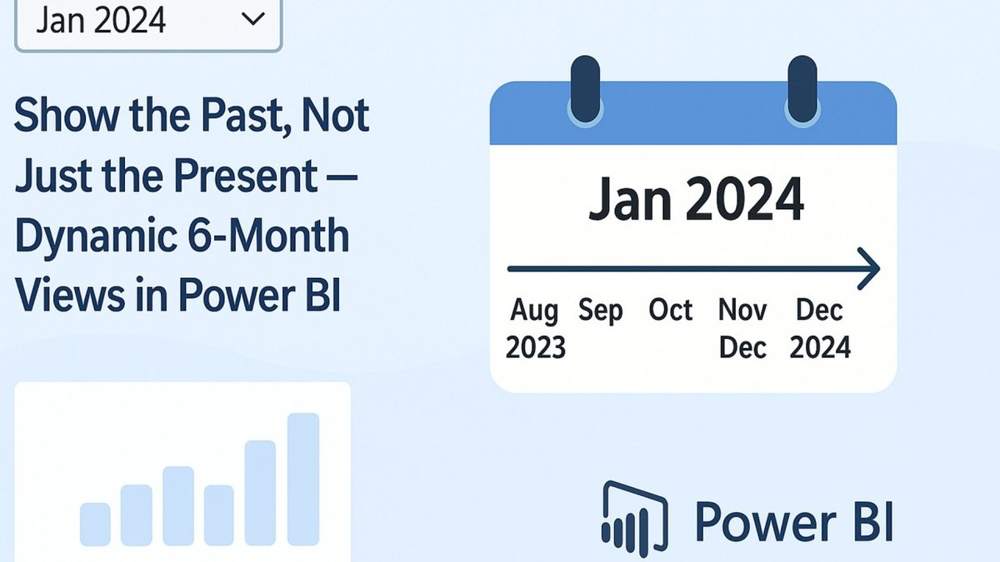

Highlight the Past, Not Just the Present -Dynamic 6-Month Views in Power BI
Logeshkumar Sivakumar · June 13, 2025 · 3 min read

📘 Introduction
Power BI excels at turning data into compelling visuals. In many real-world reporting scenarios, one common business requirement is to view rolling time window, especially when analyzing trends.
A typical use case might be:
"Show data for the last 6 months, ending with the month selected in a slicer."
However, Power BI filters data specific to the selected month.
This blog walks you through exactly how to implement that scenario.
🛠️ Implementation Strategy
To achieve this, we use a Disconnected Slicer and Dynamic DAX Measure:
- Disconnected Slicer: Create a separate DAX table "Slicer_Date" with unique Month-Year combinations and their corresponding first-of-month dates. This table isn't linked to your main data model but serves as the user's selection tool.
Slicer_Date =
ADDCOLUMNS(
SUMMARIZE('[Dim] Date', '[Dim] Date'[Year], '[Dim] Date'[Month Number]),
"Month Year", FORMAT(DATE([Year], [Month Number], 1), "mmm yyyy"),
"Date", DATE([Year], [Month Number], 1),
"Month Year (For Sorting)", FORMAT(DATE([Year], [Month Number], 1), "yyyymm")
)- Dynamic DAX Measure: Create a measure "Flag Last 6 Months" to identify if a date falls within the six-month window (selected month and five prior). This measure captures the selected date, calculates the start and end of the six-month range, and returns 1 if a date is within this period.
Flag Last 6 Months =
VAR SelectedMonth = SELECTEDVALUE(Slicer_Date[Date])
VAR StartDate = EDATE(SelectedMonth, -5)
VAR EndDate = EOMONTH(SelectedMonth, 0)
VAR CurrentDate = DATE(VALUES('[Dim] Date'[Year]), VALUES('[Dim] Date'[Month Number]), 1)
RETURN
IF (
NOT ISBLANK(SelectedMonth) &&
CurrentDate >= StartDate &&
CurrentDate <= EndDate,
1
)- Apply as Filter: Apply "Flag Last 6 Months" as a visual-level filter, set it to 1.
- Assign the 'Month Year' column from the 'Slicer_Date' table to the slicer.
Now, selecting a month (e.g., January 2025) will display data from August 2024 through January 2025.
Play
Dynamic 6-Month Views in Power BI
💼 Real-World Use Case
- Finance: Analyzing six-month revenue or expense trends.
- Marketing: Evaluating campaign performance leading up to a peak.
- Sales/Product: Assessing growth patterns before a product launch.
This functionality is invaluable across various sectors. Rather than filtering data for a single month, this approach provides richer context and better storytelling by showcasing the build-up or trend leading into a chosen point in time.
📈 Business Value
- Clarity and Flexibility: Enhances Power BI reports by allowing users to analyze trends over a defined recent window without manual adjustments to filters or slicers.
- Consistency: Ensures consistent presentation, whether for executives or internal analysis.
- Error Reduction: Minimizes user error by automating trend analysis.
- Contextual Insights: Provides insights within the relevant context.
✅ Conclusion
With just a few lines of DAX and a disconnected slicer, you can transform a standard Power BI slicer into a powerful time-intelligence tool.
When one month is selected, you’re not limited to only that month — you can show a rolling range of dates like the last 6 months, making your dashboard truly interactive and valuable for users, and highly reusable across reports.
So, the next time your business wants to dive into past performance leading up to a milestone month, you’ll have just the right technique ready to go.
💬 Have you tried something similar? Or want help implementing it in your own report? Let’s connect!
Leave a comment below to unlock exclusive access to the Power BI (.pbix) file!
#PowerBI #DAX #Analytics+ #Inforiver #RollingMonths #BusinessIntelligence #DataModeling #DynamicSlicer #Tableau #Fabric #DataEngineering #Dataflow #Datapipeline #Datawarehousing #Slicers #Rollingperiod #TimeIntelligence